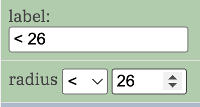
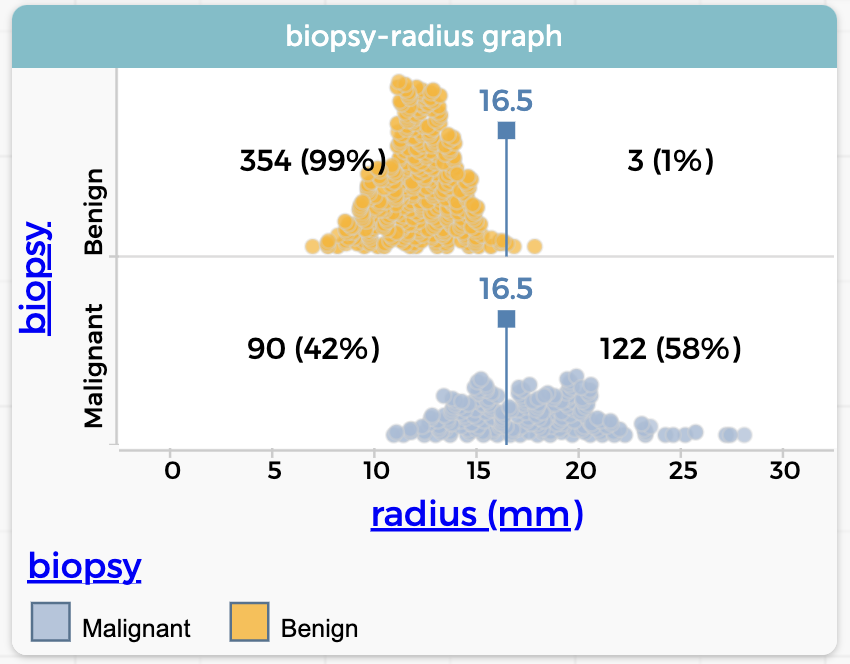
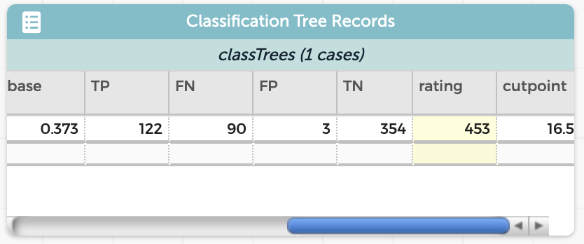

7 More about tree quality: an example with breast cancer data
In this section, we will further our understanding of the quality of trees, remind ourselves about what happens with numerical data, and learn a brutal truth about false negatives and false positives.
Let us begin by saying that the two ways you can be wrong—FN and FP—are usually not equally bad. The misclassification rate (MCR) makes no distinction: for the MCR, wrong is wrong.
But let us look at some breast cancer data.
We have a number of numerical measurements of tumors that were calculated by image processing software, using digital images. We will focus here on radius, which is in millimeters. There are other measurements too, such as perimeter, which is obvious, and concavity, which would demand some clear explanation. And as before, we have a version of the Truth: the result from a biopsy, which in this case is either benign or malignant. The goal is to predict malignancy without the expense and wait-time of a biopsy: just take an image and let the computer figure it out.
Now, which would you rather have as your mistake—a false negative or a false positive?
Most of us would say that a false negative is worse. (Never mind for a moment that you can make the opposite case.)
7.1 Looking at the data
In the live illustration below, you already have a tree set to predict biopsy.
Look at the tree: among these 569 tumors, 37.3% were malignant.
Look at the graph: apparently (and unsurprisingly) benign tumors are generally smaller.
Also in the graph: we have a “movable value” currently set to 16.6 millimeters. Almost all of the tumors bigger than 16.5 mm are malignant.
The table—collapsed into “case card view”—may be hiding behind the tree. Make the tree narrower.
Do the following:
- Drop
radiusinto the trunk of the tree to make a branch.
Arbor will pick a cut point that determines which values of radius go to the larger branch and which go to the smaller. When I did this, that cut point was 26 mm. You need to change that to be 16.5:
- Hover over the
radiusnode and click the gear that appears. The configuration box appears. (Learn more about the configuration box.)

Change the value in the lower box from 26 to 16.5 and press Done.
Specify diagnoses for your leaves: make the “large” tumors
Malignant.
If your setup is like mine, that will give you 125 malignant diagnoses, of which 122 were correct. So that leaves three false positives. On the other hand, there are 90 false negatives. That’s a lot!
Let’s alter the graph to see this more clearly.
- Drop
biopsyonto the vertical axis of the graph.
The graph splits to make two parallel dot plots, each with its own movable value. There are now four counts (and percentages); one for TP, one for FP, etc. See if you can clearly identify which is which, and why. Your graph should look like this:

We want to figure out what a good cut point would be. You can explore changing the movable values from 16.5 (you have to change both of them) and see how that affects the numbers of FP (upper right) and FN (lower left). And you should notice two sad truths:
Because the two distributions overlap, there is no way to get both
FP = 0andFN = 0.False negatives are the worst. We want to lower that number. But if you lower the cutpoint value to decrease
FN,FPhas to increase.
This means that every cutpoint is a balancing act. We can use a measure of goodness of a tree to help us achieve that balance.
We could make a measure of our tree’s effectiveness just like we did in the previous section. Suppose we decide that a false negative is five times as bad as a false positive. Then our formula might be
FN * 5 + FP
and we would want to minimize that value.
Remember that to get Arbor to calculate the values,
Open up the in order to export section below the tree.
Press emit data.
That will give you a new table with values for FP etc. Then,
Make a new attribute (perhaps
rating) and give it that formula,FN * 5 + FP. The value you’ve calculated appears in the table.Make another new attribute (perhaps
cutpoint) and enter the value for the cut point (otherwise you might forget).
Your summary table might look like this:

7.2 Some tasks
Here are some tasks you might do to extend your understanding.
7.2.1 Find the minimum
Try various cutpoints and see which one gives the lowest value for the measure.
Change the value of the cutpoint using the configuration box
Repeat the instructions above: emit data and enter the value of the cutpoint. The
FN * 5 + FPwill be calculated automatically.Make a graph of that value as a function of the cutpoint. Is there a minimum? (Yes!)
Note: the movable values in the graph are not connected to the cut point!
7.2.2 Try other attributes
See how you can do putting other attributes besides radius in the tree.
Don’t forget to help yourself out by making graphs!